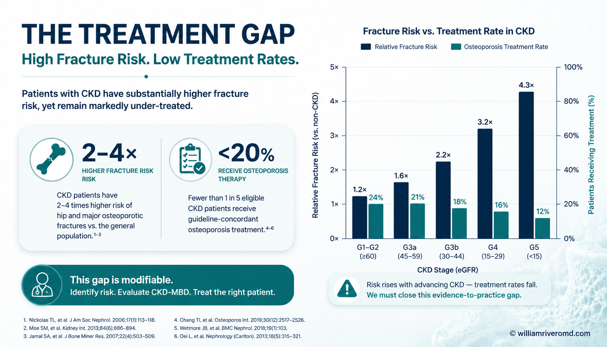
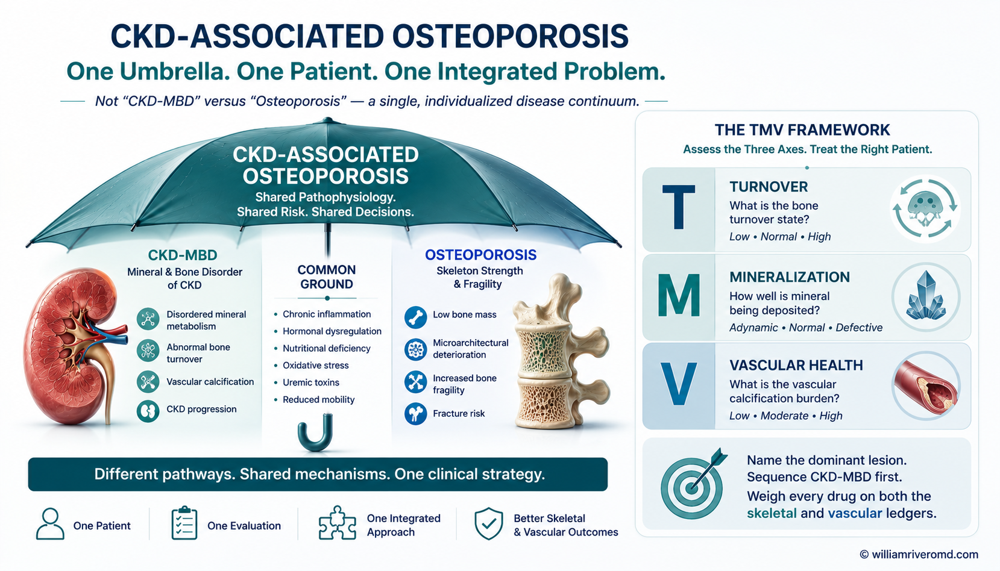

A Treatment Gap Built on a False Dichotomy
Coexistence is the rule, not the exception. The historical KDIGO separation of renal osteodystrophy from osteoporosis made them seem mutually exclusive — and the CKD patient pays the price in fractures.
The aging population delivers the typical patient as both a CKD case and an osteoporosis case. Declining eGFR routinely arrives on a skeleton already remodelled by menopausal bone loss, glucocorticoid exposure, smoking, immobility, and senescent low bone mass.1,9 CKD-MBD then develops on top of that pre-existing osteoporosis, not as its replacement.
The fracture signal in CKD
Hip-fracture risk rises continuously with falling eGFR, with post-fracture mortality substantially higher than in matched controls.4,21,28 The premature-aging effect is striking: patients younger than 45 with CKD fracture at rates resembling those over 65 with normal renal function.22
★ The KPI of the gap — 2.3% / 2.6%
Across large registries, nephrologists initiated denosumab in ~2.3% and oral bisphosphonates in ~2.6% of dialysis patients — a population whose absolute fracture risk vastly exceeds the postmenopausal women in whom these drugs are routinely prescribed.3,5 The bone specialist defers to the nephrologist; the nephrologist defers to the bone specialist; the patient fractures.
Drivers of therapeutic inertia — name them explicitly
- RCT scarcity in advanced CKD. Pivotal antiresorptive and anabolic trials excluded eGFR <30–35 mL/min; we extrapolate or do nothing.19,20
- Fear of complications. Hypocalcemia (denosumab), adynamic bone (bisphosphonates), nephrotoxicity (older formulations), atypical femoral fracture, MI/stroke (romosozumab boxed warning).3,15,18
- Conceptual confusion. Many clinicians still treat ROD and osteoporosis as separate diagnoses with separate algorithms; the 2023 Madrid Controversies Conference and the 2025 KDIGO update reframe them as one.7,8,9
The deliverable of this guide is a sequenced, individualized framework that lets a nephrologist, internist, or endocrinologist make a defensible fracture-risk decision in CKD G1–G5D — without waiting for the perfect RCT that may never arrive.

From ROD / TMV to CKD-Associated Osteoporosis
Name the dominant lesion before treating. Turnover status reframes whether the first move is CKD-MBD control, antiresorptive, or anabolic.
Three nested terms — keep them straight
- CKD-MBD — the systemic syndrome: biochemistry (Ca · Pi · PTH · FGF-23 · vitamin D) + bone abnormality + extraskeletal calcification.7,23
- Renal osteodystrophy (ROD) — the bone-morphology component of CKD-MBD, classified by the TMV system (Turnover, Mineralization, Volume).7
- Osteoporosis — a state of impaired bone strength (quantity + quality) with elevated fracture risk; the 1994 WHO BMD threshold was refined by the 2000 NIH statement to centre strength, not BMD alone.25,26
The four classic ROD patterns
Histologic ROD subtypes coexist with osteoporosis in any combination — they do not exclude it:
- High-turnover (osteitis fibrosa) — uncontrolled SHPT; rapid turnover, woven bone, peritrabecular fibrosis.
- Low-turnover / adynamic bone disease — over-suppressed PTH, calcimimetic overshoot, diabetes, aluminium (historical); few osteoblasts, low formation, high microcrack accumulation.
- Osteomalacia — vitamin D / phosphate deficits or aluminium toxicity; defective mineralization with widened osteoid seams.
- Mixed uremic osteodystrophy — the everyday reality: high turnover + impaired mineralization in the same biopsy.
The diagnostic trap — adynamic vs low-turnover osteoporosis
Under light microscopy, adynamic bone disease and low-turnover primary osteoporosis can be indistinguishable; osteoporosis has no formal histologic definition.24 Differentiation depends on clinical context (CKD stage, prior antiresorptive exposure, PTH trajectory, biochemistry). Do not start a potent antiresorptive in a patient with biochemical low turnover and an "osteoporotic" DXA without resolving this.
Why the renaming matters
The 2023 Madrid Controversies Conference and subsequent EUROD / KDIGO output recentre the conversation on the skeleton, not the lab panel. "CKD-associated osteoporosis" reframes the patient as an osteoporosis patient whose treatment options are shaped — not replaced — by their CKD.7,9,10 This is the conceptual key that unlocks the therapeutic nihilism described in §1.
Osteoporosis ≠ low BMD
Drift to correct: a low T-score is consistent with — not synonymous with — osteoporosis. Other low-BMD states (osteomalacia, mixed ROD, secondary causes) are pathophysiologically distinct and respond differently to drug class.25,26

Shared Soil, Divergent Drivers
FGF-23 rises first. Klotho falls. PTH hyporesponsiveness is variable. Uremic toxins, inflammation, oxidative stress, and a calcification-paradox bone–vascular axis finish the job.
The mineral-bone axis in CKD — five anchor moves
- FGF-23 rises first. This osteocyte-derived phosphaturic hormone increases before any measurable change in serum phosphate or PTH, suppresses 1,25(OH)₂D synthesis, and at this early stage actually dampens PTH ("PTH hysteresis").11,12
- Klotho declines. The FGF-23 co-receptor falls with CKD, magnifying skeletal and vascular signalling derangement.
- 1,25(OH)₂D falls. Loss of activated vitamin D removes a brake on PTH and reduces intestinal Ca absorption.
- Hyperphosphatemia / hypocalcemia emerge. The classic biochemical picture appears only after the earlier hormone-only phase.
- Secondary hyperparathyroidism. PTH eventually escapes hysteresis and rises — but the skeleton's response to it is variable and reduced, so a single PTH target cannot fit every patient.12
Skeletal PTH hyporesponsiveness — operational implication
Interpret PTH against bone phenotype (turnover markers ± biopsy), not against a number on a guideline. A PTH of 300 pg/mL in one dialysis patient may indicate inadequately suppressed disease; in another, it may represent appropriate post-correction turnover. The 2025 KDIGO Controversies output explicitly endorses this individualization.9,12
Non-traditional uremic drivers
Beyond classic risk factors, the uremic milieu actively degrades bone quality: uremic toxins, chronic low-grade inflammation, oxidative stress, gut dysbiosis, altered immunity, and accumulation of advanced glycation end-products.13,14 These drivers explain why a CKD patient with a "normal" BMD still fractures at an elevated rate — and why bone-strength rather than bone-density should anchor the diagnosis.
The bone–vascular axis & the calcification paradox
Patients with CKD lose mineral from the skeleton while gaining it in vessels — an inverse correlation between BMD and vascular calcification (VC) reproduced across cohorts.10,16 Proposed mechanistic links:
- Bone-derived endocrine/paracrine factors (osteocalcin, FGF-23, sclerostin) acting on vasculature.
- Shared progenitor cells and signalling — osteoblast-like transdifferentiation of vascular smooth-muscle cells under high Pi and inflammatory stimuli.15
- Impaired bone perfusion from systemic vascular disease.
- Common upstream insults — uremic toxins, oxidative stress, hyperphosphatemia.
CKD is, in this sense, a model of accelerated aging: the same drivers that age the skeleton age the artery.13 This is why every treatment decision in §6 must be weighed on both ledgers.
Modifiable dual-benefit targets
Phosphate control, inflammation suppression, and oxidative-stress reduction may benefit bone and vasculature simultaneously. Whether bone-directed therapy modifies hard CV endpoints remains an open question — explicitly stated as a research gap in the source symposium.
![Figure 3 — biomedical mechanism schematic. Top panel shows a kidney at organ-level losing function across CKD stages G1–G5D; a dashed box magnifies the osteocyte–nephron axis with FGF-23 rising first, Klotho falling, 1,25(OH)2D suppressed, and PTH following with hysteresis. A parallel right-side panel shows the bone-vascular crosstalk: vascular smooth muscle cells transdifferentiating to osteoblast-like phenotype while bone loses mineral. Bottom flow summarises injury → intervention (phosphate / inflammation / oxidative stress) → benefit (bone + vessel).](../images/ckd-associated-osteoporosis-03-fgf23-axis.webp)
Biochemistry, Imaging, and the Role of Biopsy
Establish turnover before choosing the drug class. Most decisions can be made non-invasively — biopsy is reserved for the patient who refuses to fit the algorithm.
4a. Biochemical assessment
The CKD-associated osteoporosis panel goes beyond a DXA's biochemistry minimum:
| Domain | Test | Primary CKD use |
|---|---|---|
| Mineral chemistry | Calcium (albumin-corrected or ionised), phosphate | Stage-stratified targets per KDIGO 2017 / 2025 update.9,23 |
| PTH axis | Intact PTH (iPTH) | Trend, not single value — interpret against bone phenotype. |
| Vitamin D | 25(OH)D; selective 1,25(OH)₂D | Replace nutritional D before chasing activated forms.9 |
| Phosphaturic axis | FGF-23 (research / select) | Not routine; useful in hypophosphatemic outliers. |
| Bone formation | BSAP (bone-specific alkaline phosphatase), P1NP | Not renally cleared — reliable surrogates of turnover.27 |
| Bone resorption | TRAP-5b | Renal-resistant resorption marker. |
| Markers to avoid | β-CTX, NTX, P1NP (intact-form considerations) | Renally cleared — falsely high in advanced CKD; do not interpret as elevated turnover. |
Key principle — pair markers, don't rely on one
Use a formation marker (BSAP or P1NP) together with a resorption marker (TRAP-5b). Concordantly high values support high turnover; concordantly low values support low-turnover / adynamic disease. Discordant values mean either mixed disease or assay/interference — a useful flag to obtain biopsy.
4b. Imaging
- DXA — the standard for BMD/fracture-risk stratification. Validated in CKD; a low T-score does not reveal the underlying lesion.9,17
- Trabecular bone score (TBS) — increasingly clinical, adds microarchitecture information beyond BMD.17
- HR-pQCT — best microarchitectural detail; still largely a research tool.17
- FRAX — can be used in CKD with awareness that it underestimates risk in advanced disease (FGF-23, BTM, TBS, falls not captured).
4c. Bone biopsy & histomorphometry
Tetracycline-labeled iliac-crest biopsy remains the reference standard when turnover or mineralization cannot be resolved non-invasively.9 Practical limits — invasiveness, labor, scarce histomorphometry labs, high interobserver variability, lack of normative data — are increasingly mitigated by AI-assisted quantification and TMV semiquantitative reads.
★ Triggers for biopsy referral
- Unexplained hypercalcemia or hypophosphatemia disproportionate to CKD stage.
- Suspected osteomalacia (low Pi, low 25(OH)D, elevated total ALP with low BSAP, persistent bone pain).
- Before initiating long-term antiresorptive therapy when adynamic bone disease is biochemically plausible — single most important indication in the CKD-associated osteoporosis era.
- Atypical fracture pattern (subtrochanteric, transverse, bilateral).
- Pre-transplant where bone phenotype will dictate post-transplant management.

The Cardiovascular Face of CKD-MBD
Bone and vessel share a single uremic biology. Every fracture-prevention decision must be weighed against the vascular ledger.
The clinical signal
Arterial medial calcification and valvular calcification are highly prevalent in CKD G3–G5D, progress faster than in matched non-CKD controls, and are independently associated with cardiovascular and all-cause mortality.13,15,16 Downstream clinical sequelae:
- Arterial stiffness → widened pulse pressure → impaired coronary perfusion.
- Left ventricular hypertrophy and diastolic dysfunction.
- Valvular stenosis (often calcific AS) and regurgitation.
- In dialysis, contribution to intradialytic hemodynamic instability and access dysfunction.
Mechanism — the same biology, expressed in vessel wall
Hyperphosphatemia, elevated PTH, inflammation, oxidative stress, and uremic toxins drive osteoblast-like transdifferentiation of vascular smooth-muscle cells, with deposition of bone-matrix proteins in the vessel wall.15 The same milieu that suppresses bone formation in the skeleton ectopically promotes mineralization in the artery.
The "calcification paradox" — restated
It is not a paradox. It is the predictable end-state of a single uremic biology expressed in two compartments. The shared-soil framing dictates the therapeutic posture: prioritise phosphate / inflammation / oxidative-stress control as a dual-benefit lever — and treat every bone-directed agent as a vascular decision too.
Bone–vessel crosstalk is not unique to uremia
VC tracks with low BMD in primary osteoporosis (postmenopausal women, older men) as well — confirming a shared-soil phenomenon that CKD magnifies rather than invents.10,16
Therapeutic implication
The §6 master algorithm requires an explicit weighing of vascular risk for each agent:
- Calcium load — keep dietary Ca ≤ ~1500 mg/d; minimise calcium-containing binders in patients with established VC.9
- Antiresorptives in established VC — bisphosphonate effect on VC progression is uncertain; denosumab data are mixed and may favour CV neutrality.18
- Romosozumab — anti-sclerostin BMD gains are offset by an FDA boxed warning for MI, stroke, and CV death; this matters disproportionately in a population with a high VC burden.15
- Anabolic agents (teriparatide, abaloparatide) — animal data suggest reduced VC in CKD models, but human CV endpoints are not yet available.2
A Stage- and Turnover-Stratified Strategy
Organizing principle — CKD-MBD first, then bone-targeting. Correct mineral metabolism and suppress excess turnover before layering antiresorptive therapy. This sequence prevents most denosumab-in-dialysis catastrophes.
The sequence — five steps, in order
★ Master sequence
- Stage CKD & establish turnover. eGFR + CKD-MBD chemistry + BTMs ± biopsy (§4).
- Foundation for all stages. Lifestyle (smoking, alcohol, weight-bearing exercise, falls review), nutrition (Ca 800–1000 mg/d not >1500), vitamin D repletion. Review culprit medications (sedatives, anticholinergics, orthostatic agents).9
- Correct mineral metabolism & SHPT. Phosphate control, PTH suppression to a stage-appropriate range, vitamin D analogues if indicated, calcimimetics in dialysis SHPT. Document turnover suppression before step 4.9
- Stratify by turnover & pick the class. High-turnover + osteoporosis → suppress turnover then antiresorptive. Low-turnover / adynamic → favour anabolic, avoid potent antiresorptives. (See drug-class panel below.)
- Plan exit and follow-on. Denosumab requires a follow-on antiresorptive at discontinuation. Romosozumab is a 12-month course followed by an antiresorptive. Document the plan at initiation, not termination.3,18
6a. Foundation moves — under-used, no boxed warning
- Smoking cessation, alcohol moderation, falls-prevention (vision, podiatry, home safety, medication review).9
- Weight-bearing & resistance exercise. The single most evidence-positive intervention in advanced CKD; underprescribed because it cannot be billed as a drug.
- Nutrition. Ca 800–1000 mg/d; do not exceed ~1500 mg/d to avoid net positive Ca balance and VC. Optimise vitamin D status — cholecalciferol / calcifediol in earlier CKD; activated forms (calcitriol, paricalcitol) cautiously and selectively in advanced CKD.9
6b. SHPT & mineral management
- Calcimimetics (cinacalcet, etelcalcetide) — effective for dialysis SHPT; not appropriate earlier (phosphate retention, hypocalcemia risk) and not shown to reduce fractures.
- Adequate PTH / turnover suppression should precede antiresorptive therapy in high-turnover advanced CKD — the so-called "sequential therapy" approach.9
6c. Antiresorptives — what to use, when not to
| Agent | eGFR window | Principal risk in CKD | Monitoring & sequence notes |
|---|---|---|---|
| Oral bisphosphonates (alendronate, risedronate) | Generally not initiated below eGFR ≈30–35 mL/min (FDA labelling; UK/EU guidance, verified 2026) | Prolonged skeletal retention; may worsen low-turnover/adynamic bone.19 | Individualize below threshold only with documented turnover. Stop after 3–5 yr with a drug-holiday plan. |
| IV zoledronate | Avoid < ~35 mL/min; risk of acute kidney injury and prolonged hypocalcemia in dialysis | AKI on infusion; hypocalcemia. | Not first-line in advanced CKD. |
| Denosumab (RANKL inhibitor) | Not renally cleared — effective in early CKD; FDA boxed warning for severe hypocalcemia in advanced CKD / dialysis (Jan 2024)3 | 41.1% severe hypocalcemia in dialysis women on denosumab vs 2.0% on oral bisphosphonates (Bird et al., JAMA 2024).3 Rebound vertebral-fracture risk on discontinuation. | Mandatory: correct CKD-MBD first; aggressive Ca + active vitamin D cover; Ca check days 3–10 post-dose; never stop without a follow-on antiresorptive. |
| Raloxifene (SERM) | Selected post-menopausal women on dialysis (observational) | VTE risk; modest BMD effect. | Second-line in HD women; document rationale. |
★ The denosumab-in-dialysis warning, in one paragraph
Do not initiate denosumab in a dialysis patient until you have: (1) corrected CKD-MBD — phosphate controlled, PTH appropriately suppressed, 25(OH)D repleted; (2) ensured adequate Ca + active vitamin D cover for the 10-day post-dose window; (3) scheduled Ca monitoring at days 3, 7, and 10 after each injection; (4) documented a follow-on antiresorptive plan at the time of initiation, not at the time of discontinuation. The Bird et al. 41.1% severe-hypocalcemia rate is what happens when steps 1–3 are skipped.3
6d. Anabolic / osteoanabolic agents
- Teriparatide (PTH 1-34). Efficacy in osteoporosis incl. mild–moderate CKD; BMD gains reported in dialysis cohorts; fracture data lacking in advanced CKD. Caution / theoretically paradoxical in SHPT. Off-label use for biopsy-proven adynamic bone disease in CKD G4–G5 is an emerging niche.2
- Abaloparatide (PTHrP analog). Efficacy/safety preserved across renal function in ACTIVE-trial subgroups; sparse data in advanced CKD/dialysis.
- Romosozumab (anti-sclerostin). BMD gains in HD-cohort observational data; limited by hypocalcemia risk and an FDA boxed warning for MI, stroke, and CV death — weighty in a population with high VC burden.15
Preferred fits — synthesised
- High-turnover + osteoporosis + advanced CKD: control SHPT first (calcimimetic ± active D), then a carefully timed antiresorptive — denosumab with the §6c safety bundle, or a CKD-compatible bisphosphonate course in lower CKD stages.
- Low-turnover / adynamic + fracture risk: avoid potent antiresorptives; consider teriparatide off-label after biopsy confirmation; emphasize foundation moves.
- Mixed / unresolved turnover: biopsy is justified — the consequences of choosing wrong are larger than the biopsy cost.
- Postmenopausal HD woman: raloxifene is a legitimate second-line, especially with low VTE baseline risk.

Evidence at a glance — drug class
Emerging Concept — Intermittent PTH Early in CKD
A hypothesis-generating preventive frontier — explicitly not standard of care, but conceptually positioned to address mineral, skeletal, and vascular outcomes simultaneously.
The hypothesis
Intermittent (not chronically elevated) PTH early in CKD — administered as FGF-23 begins to rise — could:
- Enhance phosphate excretion while residual nephrons can still respond,
- Blunt the FGF-23 surge,
- Preserve 1,25(OH)₂D by reducing FGF-23 suppression of 1α-hydroxylase,
- Provide anabolic skeletal benefit at a stage where bone can still respond to PTH,
- Protect against vascular calcification (animal-model signal).2
Mechanistic and animal evidence
- Acute PTH injection lowers intact FGF-23 in animal models.2
- In CKD-model rodents, intermittent teriparatide raised bone formation despite background SHPT and was associated with reduced aortic calcification.
- Postmenopausal data show acutely reduced FGF-23 after PTH(1-34) infusion in adults with normal renal function.
Human safety signal
Reassuring in mild–moderate renal impairment in the Fracture Prevention Trial (teriparatide), ACTIVE (abaloparatide), and Japanese post-marketing data.2 Human cardiovascular endpoints in CKD specifically are not yet available.
Framing for the reader — this is a sidebar, not a recommendation
Present this concept as "what's on the horizon," not as off-label clinical use. It is a strong candidate for a future intervention trial precisely because it targets the FGF-23 / Klotho / PTH axis at the stage where modification is still possible — and because it could plausibly close the bone-and-vessel ledger in a single intervention.
Closing the Gap — Multidisciplinary Care & the Research Agenda
The single biggest gain from "one umbrella" is closing the renal/non-renal referral gap so neither side defers.
Multidisciplinary care model
- Pair the nephrologist with a bone specialist (endocrinology / rheumatology / metabolic-bone clinic) early in CKD G3b — not after the first hip fracture.
- Share decisions explicitly off-label. Most pharmacologic decisions in CKD G4–G5D are not RCT-supported; the consent conversation should name this.
- Access histomorphometry / TBS / HR-pQCT for complex cases — through tertiary referral when not locally available.
- Reuse the dialysis-unit workflow. Monthly Ca / Pi / PTH checks, fall-risk screening, exercise referral, falls-prevention nursing — every existing touchpoint is a missed opportunity if it doesn't include bone health.
Stated knowledge gaps — surface them for the reader
- RCTs of fracture endpoints in G4–G5D — still scarce, KDIGO 2025 reaffirms the gap.9,20
- Whether bone-directed therapy modifies vascular / cardiovascular outcomes — open question.
- Reliable non-invasive discrimination of adynamic bone vs low-turnover osteoporosis — ongoing target for BTM-plus-imaging panels.
- Normative histomorphometric reference data; AI standardization for biopsy reads.
Cross-links to patient-facing guides at williamriveromd.com
This clinician reference links out to the matching patient-facing material. Surface these when counselling the patient:
Pitfalls, Off-Label Use & Boxed-Warning Reality
Most of what we do in CKD-associated osteoporosis is individualized, off-label, and shared-decision. Saying so out loud is the most honest part of the consent conversation.